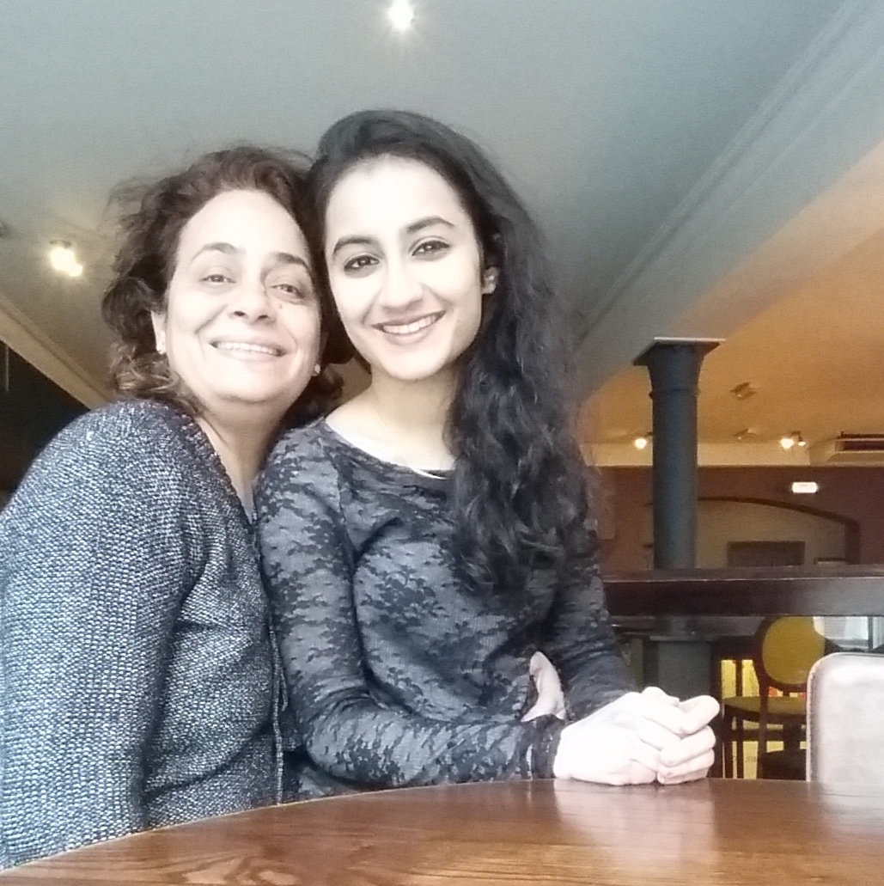

About Me
Hi! My name is Prerna and I work in derivatives documentation. I work within the legal department of a bank and negotiate the contracts that allow derivatives trading. What I love most about my work is...
- the fast-paced nature
- the motivated and capable people
- the many excuses to drink multiple cups of coffee!
Two Fun Facts About Me
- I am passionate about zazen meditation
- I trained at the London School of Massage to become a massage therapist!
My Role Model
My mum: for her sense of humour, energy, and commitment to family!
My Favourite Quote
From “The Selfish Gene” by Richard Dawkins: “Let us try to teach generosity and altruism, because we are born selfish. Let us understand what our own selfish genes are up to, because we may then at least have the chance to upset their designs, something that no other species has ever aspired to do.”